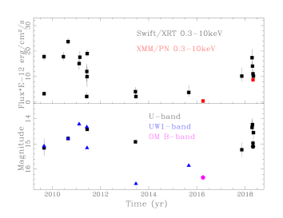
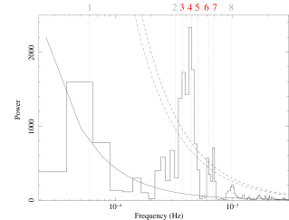
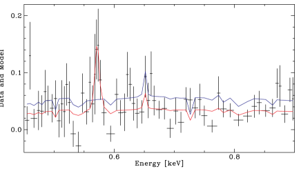
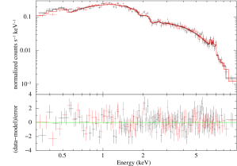
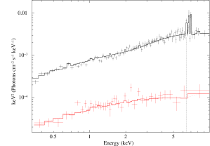

الطبيعة الحقيقية لـ Swift J0746.3-1608: قطبي متوسط محتمل يُظهر تغيرات في حالة التراكم
الملخص
أشارت الأرصاد البصرية وأرصاد الأشعة السينية إلى أن الثنائي ذي الفترة 9.38 ساعة، SWIFT J0746.3-1608، قد يكون متغيراً كارثياً من النوع المغناطيسي أو الشبيه بالمستعر، أو ثنائياً ساطعاً في الأشعة السينية منخفض الكتلة. وتتغير منحنياته الضوئية في النطاقات البصري وفوق البنفسجي والأشعة السينية بقوة على مدى سنوات. نعرض هنا رصداً حديثاً بـ XMM-Newton (28 أبريل 2018)، حين كان المصدر قد تعافى من حالة انخفاض عميقة يُرجح أنها بدأت في منتصف إلى أواخر 2011. ونكشف لأول مرة إشارة عند نحو 38 دقيقة نفسرها على أنها دوران القزم الأبيض الأولي المتراكم. وتتضاءل سعتها مع ازدياد الطاقة، مما يدل على امتصاص كهروضوئي موضعي من مادة باردة. ويُظهر طيف الأشعة السينية انبعاثاً حرارياً رقيقاً بصرياً مع فائض عند مركب الحديد، ممتصاً بواسطة وسط كثيف يغطي مصدر الأشعة السينية جزئياً. وبناءً على هذه السمات نقترح أن SWIFT J0746.3-1608 متغير كارثي مغناطيسي من نوع القطبي المتوسط (IP). وتُظهر المنحنيات الضوئية الطويلة الأمد عند أطوال موجية مختلفة حالات مرتفعة ومنخفضة، وهي ظاهرة نادرة في الصنف الفرعي IP ولم تُرصد حتى الآن إلا في ثلاثة أنظمة أخرى. إن الفترة المدارية الطويلة، والتغير الطويل الأمد الغريب، والطبيعة المغناطيسية المقترحة، تجعل SWIFT J0746.3-1608 حالة اختبار تطورية مثيرة للاهتمام.
keywords:
المستعرات، المتغيرات الكارثية - الأقزام البيضاء - الأشعة السينية: أجرام منفردة: Swift J0746.3-1608 (المعروف أيضاً باسم 1RXS J074616.8-161127)1 المقدمة
الأقطاب المتوسطة (IPs) هي صنف فرعي من المتغيرات الكارثية المغناطيسية (MCVs)، وهي ثنائيات مدمجة يراكم فيها قزم أبيض (WD) أولي مغناطيسي (B G) مادة من نجم ثانوي في النسق الرئيسي أو شبه عملاق يفيض من فص روش (Ferrario et al., 2015; Mukai, 2017). ويمكن أن يحدث التراكم على القزم الأبيض عبر قرص أو مباشرة من تيار، تبعاً لشدة المجال المغناطيسي ودرجة عدم التزامن. تكون IPs عادة أنظمة غير متزامنة تحقق . علاوة على ذلك، يمكن أيضاً حدوث تراكم هجين على هيئة فيضان قرصي (Hellier, 1995; Norton et al., 1997)، ويُرصد ذلك كثيراً (انظر مثلاً Bernardini et al., 2012, 2017). في نماذج التراكم هذه، تُوجَّه المادة القريبة من سطح القزم الأبيض على امتداد خطوط المجال المغناطيسي، وعند بلوغها سرعات فوق صوتية تتشكل منطقة ما بعد الصدمة (PSR) فوق السطح. تكون PSR حارة ( keV)، وفي IPs يبرد الجريان ويتباطأ أساساً عبر إشعاع الفرملة (أشعة سينية صلبة) (Aizu, 1973; Wu et al., 1994; Cropper et al., 1999). ثم ينبض هذا الانبعاث في الأشعة السينية عند فترة دوران القزم الأبيض (في حالة التراكم القرصي)، أو عند فترة الخفقان (في غياب القرص)، أو عند الفترتين كلتيهما في حالة فيضان القرص (Hellier, 1995). الغالبية العظمى من IPs أنظمة مستمرة، لكن مجموعة فرعية صغيرة تشمل FO Aqr وAO Psc وV1223 Sgr أظهرت حالات تراكم منخفضة (Garnavich & Szkody, 1988; Kennedy et al., 2017; Littlefield et al., 2018). ويُعتقد أن هذا الخفوت ناتج عن انخفاض مؤقت في معدل انتقال الكتلة من النجم المانح (Livio & Pringle, 1994).
SWIFT J0746.3-1608 (ويشار إليه فيما يلي بـ J0746) هو أحد المصادر التي لا تزال غير مصنفة في فهارس الطاقات العالية (Oh et al., 2018; Bird et al., 2016). وقد صنفت المتابعات البصرية J0746 على أنه إما MCV أو نظام شبيه بالمستعر بفترة مدارية طويلة تبلغ 9.38 ساعة. وفي الأشعة السينية، رصد القمر الاصطناعي “Neil Geherls” Swift (ويشار إليه فيما يلي بـ Swift) المصدر على أنه شديد التغير (Thorstensen & Halpern, 2013; Parisi et al., 2014). عندما رُصد لأول مرة بواسطة XMM-Newton في 2016، كان عند أدنى مستوى تدفق مسجل له، مما حال دون تصنيفه. وأشارت خصائصه الطيفية في الأشعة السينية إلى أنه إما MCV أو LMXB (Bernardini et al., 2017). وقد أتاح لنا رصد متابع بالأشعة السينية بواسطة Swift الكشف عن زيادة في التدفق ابتداءً من نوفمبر 2017، مما يدل على أن المصدر تعافى من أدنى حالاته وكان يرتفع نحو الحالة الأعلى. نعرض هنا تحليلاً زمنياً وطيفياً مفصلاً لرصد ثان بـ XMM-Newton أُجري في 28 أبريل 2018، حين كان المصدر أسطع بنحو عامل 20 مما كان عليه في 2016. ونستكمل الدراسة بمنحنيات ضوئية طويلة الأمد في البصري وفوق البنفسجي والأشعة السينية من أداتي UVOT وXRT على Swift. وتُظهر هذه أن J0746 متغير كارثي غريب، يُرجح أنه MCV من نوع IP، ويُظهر تغيرات سريعة وشديدة على وجه خاص في حالات التراكم.
2 الأرصاد واختزال البيانات
رُصد J0746 في 28 أبريل 2018 عند 15:44:21 UTC بواسطة XMM-Newton (obsid 0830190701) باستخدام كاميرات التصوير الفوتوني الأوروبية (EPIC: PN، MOS1 وMOS2 Strüder et al., 2001; Turner et al., 2001; den Herder et al., 2001) متممة بقياس ضوئي متزامن من المرصد البصري (OM, Mason et al., 2001) في حزمة U. عملت كاميرا PN في نمط التوقيت، بينما عملت كاميرتا MOS في نمط النافذة الصغيرة (مع تطبيق المرشح الرقيق دائماً). كان تعريض PN أقصر من تعريض كاميرات MOS (20 مقابل 22 ks). اختُزلت البيانات وفُحصت لكل الأدوات، لكن بسبب طبيعة المصدر (مثل كونه دواراً بطيئاً) لا نعرض إلا نتائج كاميرات MOS. عولجت البيانات باستخدام برمجية التحليل العلمي (SAS) الإصدار 16.1.0 وأحدث ملفات المعايرة المتاحة في مايو 2018. واستُخرجت قوائم أحداث فوتونات المصدر وأطيافه من منطقة دائرية نصف قطرها 40 ثانية قوسية. واستُخرجت الخلفية من منطقة خالية من تلوث المصادر في شريحة CCD نفسها التي يقع فيها المصدر. أُزيلت حقب الخلفية الجسيمية العالية من أجل التحليل الطيفي، أما في التحليل الزمني فاستُخدمت مجموعة البيانات كاملة. واستُخدمت أطياف RGS من خط أنابيب SAS القياسي. عمل OM في نمط النافذة السريعة باستخدام مرشح حزمة U (2600–4300 Å) (تعريض 21.4 ks). واستُخرجت المنحنيات الضوئية باستخدام خط الأنابيب القياسي وصُححت إلى مركز ثقل النظام الشمسي باستخدام مهمة barycen.
استُخدمت المهمة epiclccorr لتوليد منحنيات ضوئية مطروح منها الخلفية في نطاقات 0.3–2 و2–3 و3–5 و5–12، وفي النطاق الكامل 0.3–12 keV. وأعيد تجميع الأطياف باستخدام specgroup بفرض حد أدنى قدره 30 عدّات في كل خانة وحد أقصى لإفراط أخذ العينات من دقة الطاقة بعامل ثلاثة. كما استُخرجت الأطياف عند حدّي الطور الأدنى والأقصى لدورة الدوران. ووُفقت أطياف MOSs في آن واحد باستخدام حزمة Xspec الإصدار 12.9.1p (Arnaud, 1996). واستُخرجت أيضاً منحنيات ضوئية وأطياف لـ XRT (0.3–10 keV) وUVOT (حزمتا U وUW1) من Swift. بالنسبة إلى بيانات XRT استخدمنا مولّد المنتجات المتاح في Leicester Swift Science Centre (Evans et al., 2009)، أما لبيانات UVOT فاتبعنا الإجراءات القياسية (http://www.swift.ac.uk/analysis/uvot/).
3 تحليل البيانات والنتائج
3.1 التحليل الزمني
فحصنا أولاً المنحنيات الضوئية الطويلة الأمد في النطاقات البصري وفوق البنفسجي والأشعة السينية المسجلة بواسطة Swift (الشكل 1) والمجمعة بنقطة واحدة لكل obsid (عادةً توجد عدة لقطات طول كل منها نحو 500–1000 s في كل obsid). يتغير J0746 بشدة على المقاييس الزمنية القصيرة (أقل من يوم) والطويلة (أكثر من يوم). وتظهر بوضوح حالات تدفق منخفضة ومرتفعة، حيث نعرّف اعتباطياً و . وقد اشتُق تدفق 0.3–10 keV باستخدام خط الأنابيب الآلي باستخراج طيف واحد لكل obsid. لا يمكن استخلاص استنتاجات قوية بشأن انتقالات الحالة (ومدتها) بسبب التغطية المتقطعة. ومع ذلك، تبدو الانتقالات سريعة. ففي 29 أغسطس 2009 انخفض التدفق خلال أقل من يوم من حالة مرتفعة ( ) إلى حالة منخفضة ( ) (أول نقطتين على يسار الشكل 1). وسُجل الانتقال السريع المعاكس (من المنخفض إلى المرتفع) في يونيو 2011. ثم وُجد J0746 في الحالة المنخفضة في كل من 2013 و2015، وعندما رُصد بواسطة XMM-Newton في أبريل 2016 كان عند أدنى مستوى مسجل له ( ). وأظهر رصد Swift المتابع الذي بدأ في نوفمبر 2017 أن المصدر يرتفع نحو مستويات أعلى، وهو ما تأكد في توجيهات إضافية في أبريل وبداية مايو 2018. وجاء رصد XMM-Newton الثاني بين آخر رصدين لـ Swift، مؤكداً التعافي إلى حالة مرتفعة. سُجل سلوك شبيه بالتوهجات بسعة أثناء الحالة المرتفعة، إذ يمكن أن يتغير تدفق 0.3–10 keV من إلى ، على سبيل المثال (انظر أيضاً الشكل 7 في Thorstensen & Halpern, 2013). وترتبط منحنيات فوق البنفسجي والبصري عموماً بمنحنى الأشعة السينية، مع تدفق UVW1-band ( Å) الذي كان أخفت بأكثر من قدرين في 2013 مقارنة بـ 2011 (16.6 مقابل 14 mag). وأظهرت توجيهات XMM-Newton المصدر عند B mag في 2016 وعند U mag في أبريل 2018. وعلى الرغم من أن الرصد جرى في نطاقات طاقية مختلفة، تؤكد بيانات OM ازدياد سطوع المصدر في 2018.
جُمعت بيانات أحداث EPIC MOSs والمنحنيات الضوئية المطروح منها الخلفية معاً لدراسة التغير الزمني. يتغير كل من منحنيي 0.3–12 keV وحزمة U (الشكل 2) بقوة، مع قمم متعددة تتكرر على مقياس زمني قصير، حيث يتغير تدفق 0.3–12 keV في المتوسط بعامل يقارب 10 (2 في حزمة U). وبافتراض شكل طيفي ثابت (القسم 3.2 والجدول 1)، يتغير التدفق من حد أدنى قدره (0.1 c/s) إلى حد أقصى قدره (2 c/s). وتشبه هذه التغيرات القوية ما رصده XRT أثناء الحالة المرتفعة في أغسطس 2009. وهذا يدل على أن J0746 مصدر شديد التغير في جميع الطاقات، حتى أثناء الحالات المرتفعة.
مع أنه لا توجد علامة واضحة على تغير دوري طويل الأمد مرتبط بالفترة المدارية (9.38 ساعة)، فإن التغير القوي على مدى آلاف الثواني يلمّح إلى إشارات دورية. ثم حُسبت أطياف القدرة في نطاقات طاقية مختلفة عند الدقة الزمنية لكاميرات MOS (0.3 s). وتُظهر جميعها قمة بنيوية في المجال 0.35–0.5 mHz وبضع قمم أضعف عند ترددات أعلى وأدنى. أما القمة ذات التردد الأدنى (P1، انظر الشكل 3)، فعلى الرغم من توافقها مع نصف الفترة المدارية البالغة 9.38 ساعة، فهي، كما نناقش أدناه، غير ذات دلالة إحصائية ويرجح أنها ناجمة عن ضجيج أحمر. وقد وُجد أن التوافق الأول للتردد المداري (2) يهيمن على منحنى حزمة B أثناء الحالة المنخفضة في 2016، لكن ليس في الأشعة السينية (Bernardini et al., 2017). ويوحي اتساع القمة الرئيسية بوجود مساهمات متعددة من دوريات متقاربة. لذلك حاولنا تحديدها باستخدام طريقتين مختلفتين، مع التركيز على أنعم نطاق 0.3–2 keV. أولاً، استخدمنا مهمة ftools efsearch11 1 https://heasarc.gsfc.nasa.gov/ftools/. ويعطي توافق غاوسي مراكز قمم عند: P، وP، وP، وP، وP، وP s 22 2 بهذه الطريقة لا يمكن فصل P5 عن P4.. وتُذكر جميع اللايقينيات فيما يلي عند مستوى ثقة . كما وفقنا المنحنى الضوئي 0.3–2 keV المجمع عند دقة 10 s باستخدام حزمة Period04 (Lenz & Breger, 2005) التي تتيح إجراء توافقات متعددة الجيوب باستعمال الترددات ذات الصلة المحددة عبر إزالة الاتجاه من المنحنى الضوئي تكرارياً. وقد أعطى توافق بثمانية ترددات تمثيلاً معقولاً للمنحنى الضوئي، وإن لم يكن مرضياً (، dof=2080). قُيمت اللايقينيات في المعلمات باستخدام محاكاة سلسلة ماركوف مونت كارلو (MCMC) ضمن حزمة Period04، بإجراء 500 تكرار. وفي حين بقيت P1 وP6 غير مقيدتين، وجدنا: P s، وP، وP، وP، وP، وP. وتتفق القيم الأخيرة ضمن اللايقينيات مع القيم المقاسة باستخدام efsearch. وقُيمت أيضاً دلالة القمم في طيف القدرة المتأثر بالضجيج الأحمر. اتبعنا Vaughan (2005) مفترضين قانون قوة للطيف الأساسي (P). ثم وُفق مخطط القدرة اللوغاريتمي-اللوغاريتمي بعد إزالة الانحياز بدالة خطية ذات ميل (، dof=367). ثم قُيم مستويا الثقة العالمية 95 و99 في المئة باستخدام 369 تردداً مستقلاً. ولا تُكشف إلا القمتان العريضتان حول 0.4 و0.7 mHz (اللتان تشملان P3 إلى P7) فوق مستوى 99 في المئة (الشكل 3).
حُسب أيضاً الكسر النابض (PF) 33 3 ، حيث إن و هما التدفقان الأعظمي والأدنى للجيب عند التردد الأساسي، على التوالي. بوصفه دالة في مجال الطاقة. وجدنا أن جميع الإشارات لها PF ثابت باستثناء P4، حيث ينخفض مع ازدياد الطاقة انخفاضاً معنوياً (PF، وPF، وPF، وPF في المئة؛ الشكل 4). ومن الخصائص النمطية لـ MCVs، وخصوصاً IPs، وجود دورية دوران تعتمد على الطاقة، وتُعزى إلى الامتصاص الكهروضوئي من مادة باردة داخل جريان التراكم المحصور مغناطيسياً (Rosen et al., 1988). وبافتراض أن P4 هي دوران () القزم الأبيض المتراكم، وبدمجها مع الفترة المدارية من Thorstensen & Halpern (2013)، نجد بالنسبة إلى الدوريات ذات الدلالة أن 1/P، و1/P، و1/P و1/P، بينما لا نجد تفسيراً لـ P6. وعلى حد علمنا، لا تُعرف P7 بأنها قوية في أي IPs أخرى. إشارة الدوران هي الأعلى في نطاق 0.3–2 keV، وتبرز من القمة العريضة في المنطقة التي تشمل و و (الشكل 3). ونؤكد أن تعريضاً أطول كان سيحسن الدقة بما يسمح بفصل عن حزمها الجانبية الأقرب. وخلاصة القول، نقترح أن P s (نحو 38 دقيقة) هي فترة دوران القزم الأبيض. ونلاحظ أنه أثناء الحالة المنخفضة وُجدت إشارة إلى دورية في الأشعة السينية عند 2700 s، كان أصلها غير واضح آنذاك (Bernardini et al., 2017)، لكننا نجدها الآن متوافقة مع .
في طيف القدرة لحزمة U، أقوى إشارة هي P s، كما تظهر P وP s أيضاً، بينما لا توجد قدرة عند P4 ().
ولفحص التغير الطيفي بوصفه دالة في فترة الدوران، حُسبت نسبة الصلادة (المعرّفة بأنها نسبة معدل العد في كل خانة طورية بين نطاقي طاقة مختارين). وتُظهر المقارنة بين 0.3–2 و3–5 keV بوضوح أن تعديل الدوران يكون أصلب عند الحد الأدنى (HR)، بينما يكون أنعم (HR) عند الحد الأقصى.


3.2 التحليل الطيفي
طيف J0746 حراري ورقيق بصرياً، مع فائض عند مركب الحديد (6.4–7.0 keV)، كما يُرصد عادة في MCVs. وتتميز هذه المصادر بأطياف متعددة الحرارة يمتصها مقدار كثيف من المادة الباردة موضعياً داخل النظام الثنائي، على الأرجح في عمود التراكم فوق الصدمة (انظر مثلاً Done et al., 1995; Ezuka & Ishida, 1999; Bernardini et al., 2013; Mukai et al., 2015; Bernardini et al., 2017; Bernardini et al., 2018). ثم وُفق طيف 0.3–10 keV بنموذج مكوّن من مركبة بلازما رقيقة بصرياً (mekal أو cemekl في Xspec)، حيث تُترك وفرة المعادن (AZ) بالنسبة إلى الشمس، المضبوطة على قيمة ISM من Wilms et al. (2000)، حرة في التغير، إضافة إلى خط غاوسي ضيق مثبت عند 6.4 keV لتمثيل خط Fe Kα الفلوري، وكل ذلك ممتص بواسطة عمود تغطية كلية (phabs) وجزئية (pcfabs). ويُبرَّر استخدام pcfabs بأن PF يتناقص مع ازدياد الطاقة. لم نوفق طيف BAT المتراكم على مدى سنوات كثيرة في آن واحد، لأن ذلك كان سيتطلب مركبة معايرة متصالبة مقدارها نحو 3. وهذا يعني أن J0746 كان في المتوسط أسطع منه أثناء توجيه XMM-Newton في 2018.
يوفر كل من نموذج البلازما متعددة الحرارة (cemekl) ونموذج البلازما وحيدة الحرارة (mekal) توافقاً مقبولاً مع البيانات (، 192 d.o.f.، و 193 d.o.f.، على التوالي؛ الجدول 1 والشكل 6). والممتص الكلي أقل بمرتبتين من مقدار ISM في اتجاه المصدر (Kalberla et al., 2005)، مما يوحي بمصدر قريب. أما ممتص التغطية الجزئية فله كثافة عمودية cm-2 وكسر تغطية cvf في المئة. ولا تتطلب البيانات إحصائياً مركبة جسم أسود لينة (kT eV)، وهي مركبة كثيراً ما توجد في أطياف MCVs. درجة حرارة البلازما العظمى في cemekl هي kT keV، وهي أعلى لكنها متفقة ضمن مع المقاسة باستخدام mekal. ونؤكد أن الأولى ينبغي اعتبارها حداً أدنى أكثر موثوقية لدرجة حرارة الصدمة 44 4 تزداد درجة الحرارة العظمى في cemekl قليلاً إلى keV عند تضمين طيف BAT والسماح بالمعايرة المتصالبة الكبيرة.. كما اشتققنا حداً أدنى لكتلة القزم الأبيض باستخدام نموذج أكثر فيزيائية طُور في Suleimanov et al. (2005)، ويأخذ في الحسبان تدرجات الحرارة والكثافة والجاذبية داخل PSR. أدرجنا في التوافق طيف BAT لأن النموذج يعتمد على الطاقات العالية لاشتقاق الكتلة. واستُخدم الطيف ذو القنوات الثماني من أول 70 شهراً من رصد BAT (Baumgartner et al., 2013) المتاح في موقع NASA GSFC. واقتصر التحليل الطيفي على 80 keV. وأضيف ثابت معايرة متصالبة وخط غاوسي عريض لمراعاة تغير التدفق ومركب خط الحديد، على التوالي. ويعطي التوافق M (، 195 d.o.f.).
تُظهر بيانات RGS وجود خط OVII متمركز عند keV، في حين يكاد نموذج cemekl الأفضل توافقاً لا يتنبأ بأي تدفق من هذا الخط (الشكل 5). ويبلغ العرض المكافئ 24 (8–40) eV، حيث يمثل الخطأ مستوى ثقة 90%، مع احتساب كامل للايقينيات في كل من مركبتي الغاوسي وcemekl. وقد شوهد فائض مماثل في خط OVII في عدة IPs أخرى (مثل HT Cam, de Martino et al., 2005). وقد توحي طاقة المركز بمزيج من المركبتين الرنينية والبينية، بينما تبدو المركبة المحظورة ضعيفة جداً. إن كشف خط OVII يدل بوضوح على أن منطقة ما بعد الصدمة متعددة الحرارة، مما يدعم تفضيلنا لنموذج cemekl.

لدراسة دور المعلمات الطيفية في توليد تعديل الدوران في الأشعة السينية، أُجري تحليل طيفي محلول الطور (طور الدوران). ووُفقت الأطياف المستخرجة عند حد الدوران الأدنى () والأقصى () على حدة باستخدام كلا النموذجين في الجدول 1. وثُبتت N وAZ عند قيم طيفها المتوسط. وتُركت جميع المعلمات الأخرى حرة في التغير. وبالنسبة إلى كلا النموذجين وجدنا أن تعديل الدوران ناجم عن زيادة كسر التغطية عند حد الدوران الأدنى (من إلى في المئة) وزيادة المطابقة عند حد الدوران الأقصى (بنسبة في المئة). وفي خطوة أخيرة، قارنا النتائج الطيفية المتوسطة في الحالة المرتفعة بتلك الخاصة بالحالة المنخفضة (الشكل 6، اللوحة اليمنى). استخدمنا البيانات المعروضة في Bernardini et al. (2017) وأعدنا توافقها بكل من mekal وcemekl، مع تثبيت N وAZ على قيم أفضل توافق للحالة المرتفعة المتوسطة. ولم نُدرج مركبتي pcfabs وGaussian في التوافق الأخير، لأن أياً منهما ليس مطلوباً إحصائياً. أثناء الحالة المنخفضة يكون المصدر ألين، مع kT keV، أو kT keV (F ).
|
  |
| mod. | N | N | cvf | kT | n | AZ | EW | F0.3-10 | FX,bol | /dof |
| cm-2 | cm-2 | % | keV | keV | erg/cm2/s | erg/cm2/s | ||||
| cemeka | 0.0130.005 | 8.212 | 453 | b | 23 | 0.780.17 | 0.110.02 | 8.70.2 | 1.05/192 | |
| mek | 0.0150.005 | 9.31.2 | 463 | 6.20.3 | 0.670.14 | 0.110.01 | 8.70.1 | 1.06/193 |
a دليل قانون القوة متعدد الحرارة .
b درجة الحرارة العظمى.
4 المناقشة والاستنتاجات
أظهر رصد XMM-Newton في أبريل 2018 أن J0746 قد تعافى من حالته المنخفضة منذ منتصف إلى أواخر 2011. وقد ثبتت فترته المدارية بثبات عند 9.38 ساعة من التحليل الطيفي البصري (Thorstensen & Halpern, 2013). وجدنا مصدراً شديد التغير في الأشعة السينية وحددنا دورية بارزة عند s، نفسرها على أنها فترة دوران القزم الأبيض المتراكم. وبسبب التغطية القصيرة في الأشعة السينية، لا نستطيع فصل هذه الدورية عن الخفقان، ، و، وهي الحزم الجانبية الأكثر شيوعاً في أطياف قدرة IPs. إذا كانت هذه فترة دوران قزم أبيض مغناطيسي، فإن J0746 هو IP بنسبة فترة دوران إلى فترة مدارية P، وهي متوافقة تماماً مع النسب المرصودة في غالبية IPs (Norton et al., 2004; Norton et al., 2008; Bernardini et al., 2017). ويُظهر منحنى ضوئياً شديد التغير في الأشعة السينية. تعديل الدوران هو أقوى إشارة في الأشعة السينية اللينة، كما يوجد عادة في IPs بسبب آثار الامتصاص الكهروضوئي في ستارة التراكم المحصورة مغناطيسياً. كما حددنا حزماً جانبية قريبة، يُرجح أنها ناتجة عن و و، مع احتمال وجود حزم أخرى متداخلة. وعلى الرغم من أن الإشارة عند ليست ذات دلالة إحصائية عند الترددات المنخفضة، فإنها تبدو مؤثرة في طيف القدرة أيضاً عند ترددات أعلى. وقد وُجد أنها تهيمن أيضاً على المنحنى الضوئي البصري أثناء الحالة المنخفضة (Bernardini et al., 2017). غالباً ما تكون أطياف قدرة الأشعة السينية لـ IPs معقدة، مع حزم جانبية متعددة بين ترددي الدوران والمدار ومزيج من التوافقيات (Norton & Watson, 1989). إن أطياف القدرة النظرية التي تعيد إنتاج تعدد الدوران والحزم الجانبية والتوافقيات (Norton et al., 1996) مثل تلك المرصودة في J0746 ستتطلب هندسة معقدة، يرجح أنها تنطوي على قطبين متقابلين غير متماثلين يساهمان بقدر غير متساو. وهذا يجعل طيف قدرة SWIFT J0746.3-1608 مثيراً للاهتمام على وجه خاص للأعمال المستقبلية الرامية إلى حل هندسة التراكم في بنية مجال مغناطيسي يُرجح أنها أكثر تعقيداً.
اشتققنا مسافة J0746 من إصدار بيانات ESA GAIA DR2 (Gaia Collaboration et al., 2016; Gaia Collaboration et al., 2018). لدى J0746 اختلاف منظر مثلثي مقيد جيداً قدره mas، ويترجم ذلك، باستخدام سابق للكثافة الفضائية قائم على النموذج الثلاثي الأبعاد للمجرة كما تراه Gaia (انظر التفاصيل في Bailer-Jones et al., 2018)، إلى مسافة pc. وباستخدام وتدفقات الحالات المنخفضة والمرتفعة البولومترية (FX,bol)، وبافتراض ، واستخدام M، نحصل على معدلات التراكم الكتلي الآتية: و ، أي تغير بعامل . لذلك، فإن J0746 هو MCV نادر مختار بالأشعة السينية يُظهر حالات أشعة سينية مرتفعة ومنخفضة قصوى. ومن هذه الناحية، يذكّر J0746 بـ IP FO Aqr (Littlefield et al., 2016; Kennedy et al., 2017)، حيث . إضافة إلى ذلك، يورد Šimon (2015) عن الحالات المنخفضة البصرية وحالات Swift/BAT المنخفضة لـ IP آخر، هو V1223 Sgr، كما تُعرف حالة منخفضة بصرية لـ AO Psc (Garnavich & Szkody, 1988)، وإن كنا في هذه الحالة لا نعرف هل صاحبتها حالة منخفضة في الأشعة السينية. وأخيراً، فإن المتغير الكارثي الغريب ذي الفترة المدارية الطويلة Swift J1907.3-2050=V1082 Sgr يُظهر أيضاً حالات مرتفعة ومنخفضة في البصري وسلوكاً توهجياً في منحناه الضوئي للأشعة السينية (Thorstensen et al., 2010; Bernardini et al., 2013). وإذا كان تصنيف IP صحيحاً، فإن ذلك يجعل J0746 ثاني IP فقط، بعد FO Aqr، يُرصد بالأشعة السينية في حالتين مرتفعة ومنخفضة. ويُعتقد أن هذا النوع من انتقالات الحالة في CVs ناتج عن تغيرات في معدل انتقال الكتلة من النجم المانح. وقد تكون هذه ناشئة عن بقع مغناطيسية سطحية تتركز أمام نقطة لاغرانج الداخلية (L1) فتملؤها جزئياً، مما يخفض مؤقتاً انتقال الكتلة (Livio & Pringle, 1994). وقد استُدل لأول مرة على وجود بقع نجمية في مانح IP AE Aqr (Hill et al., 2016)، مع أنه لم يُرصد قط وهو يمر بتغيرات حالة. وقد زُعم أن البقع النجمية مسؤولة عن الحالات المنخفضة في Polars وعن تغيرات الحالة في FO Aqr (Kennedy et al., 2017). ونلاحظ، على نحو مثير للاهتمام، أن البقع النجمية عند L1 ينبغي أن تنتج انتقالات حالة عشوائية (أي غير دورية) (Hessman et al., 2000)، كما رصدنا بالفعل في J0746. ونقترح أنه في حالة التراكم المنخفضة يكون القرص مستنزفاً ويحدث التراكم أساساً عبر تيار. وفوق ذلك، يُتوقع أن يكون الامتصاص في الأشعة السينية مهملاً بسبب انخفاض معدل التراكم الكتلي على القزم الأبيض. وبالفعل، يكون المصدر خافتاً أثناء الحالة المنخفضة، ولا يُظهر أي علامة على امتصاص جوهري، ولا تُكشف إلا الحزمة الجانبية () عند أطوال موجية في الأشعة السينية، بينما لا توجد قدرة عند الدوران، مما يدل على أن التراكم يصطدم مباشرة بالقزم الأبيض من دون قرص متداخل. وعند الأطوال الموجية البصرية، تُكشف ، مما يشير إلى مساهمة قوية من التعديل الإهليلجي للنجم المانح، ومن ثم إلى قرص خافت. أما أثناء الحالة المرتفعة، فمن المرجح أن يكون القرص متطوراً جيداً، وأن يستمر التراكم من القرص على امتداد خطوط المجال فوق المناطق القطبية، وأن يكون الامتصاص المحلي أعلى بكثير (N cm-2). كما أن وجود عدة حزم جانبية لفترتي الدوران والمدار يوحي بمساهمة من فيضان القرص (Hellier, 1995). تُظهر نتائجنا بشأن التعافي الحديث جداً إلى حالة التراكم المرتفعة في J0746 وتصنيف IP المحتمل أن حدوث الحالات المرتفعة والمنخفضة، على الرغم من ندرته في هذه الفئة من MCVs، ظاهرة مشتركة بين جميع أنواع CVs. والمثير للاهتمام على وجه خاص هو الفترة المدارية الطويلة لـ J0746. فالأنظمة الثلاثة المؤكدة من IPs التي رُصدت حتى الآن وهي تُظهر حالات مرتفعة/منخفضة لها كلها فترات مدارية أقصر، إذ يقع AO Psc وV1223 Sgr في مجال 3–4 hr لنجوم VY Scl، وFO Aqr عند 4.85 h (بينما يمتلك CV الغريب V1082 Sgr فترة 20.8 h). وقد أظهر V1223 Sgr حالات منخفضة ممتدة ( yr)، وخضع النظامان الآخران لحقب قصيرة من معدلات تراكم منخفضة، مع تعافٍ بطيء لـ FO Aqr من حالة منخفضة في 2016 خلال نحو مئة يوم (Garnavich & Szkody, 1988; Littlefield et al., 2016). وفي مايو 2018، أظهر FO Aqr حالته المنخفضة الثالثة خلال 2 سنة، على الرغم من أنه كان يوجد دائماً عند مستوى لمعان ثابت قبل 2016 لمدة تقارب 100 سنة (Littlefield et al., 2018). يقع J0746 عند 9.38 h ويُظهر أسرع انتقالات حالة (أقل من يوم). وهذا يجعل هذا المصدر (والأنظمة طويلة الفترة عموماً) مثيراً للاهتمام على نحو خاص لأن مانحاتها ينبغي أن تكون متطورة نووياً (Goliasch & Nelson, 2015)، ومن ثم قد تكون حالات اختبار لفهم فقدان الزخم الزاوي الذي يحكم تطورها نحو فترات مدارية قصيرة (Spruit & Ritter, 1983; Andronov et al., 2003). وتظل انتقالات الحالة ظاهرة معقدة وغير مفهومة بعد، تُرصد ليس فقط في CVs بل أيضاً في LMXBs وتحتاج إلى تفسير واضح. وقد عاد J0746 مؤخراً إلى حالة مرتفعة شديدة التغير، وسيكون الرصد المتابع متعدد الحزم، ولا سيما إذا التقط انتقالات حالة، بالغ الأهمية.
الشكر والتقدير
نشكر الدكتور Norbert Schartel وفريق Swift على منحهما وقت DDT لكل من XMM-Newton وSwift، على التوالي. ونقر بنقاش مفيد مع Gianluca Israel. ونشكر الحكم المجهول على التعليقات المفيدة. يتلقى FB تمويلاً من برنامج البحث والابتكار Horizon 2020 التابع للاتحاد الأوروبي بموجب اتفاقية منحة Marie Sklodowska-Curie رقم 664931. ويدعم DdM كل من وكالة الفضاء الإيطالية والمعهد الوطني للفيزياء الفلكية، ASI/INAF، بموجب الاتفاقيتين ASI-INAF I/037/12/0 وASI-INAF n.2017-14-H.0. يستند هذا العمل إلى أرصاد حُصل عليها بواسطة XMM-Newton، وهي مهمة علمية تابعة لوكالة ESA بأدوات ومساهمات ممولة مباشرة من الدول الأعضاء في ESA، وبواسطة Swift، وهي مهمة علمية تابعة لـ NASA بمشاركة إيطالية، وبواسطة Gaia، وهي مهمة تابعة لـ ESA. وتُعالج بيانات Gaia بواسطة اتحاد معالجة البيانات وتحليلها (DPAC).
References
- Aizu (1973) Aizu K., 1973, Prog. Theor. Phys., 49, 1184
- Andronov et al. (2003) Andronov N., Pinsonneault M., Sills A., 2003, ApJ, 582, 358
- Arnaud (1996) Arnaud K. A., 1996, in Jacoby G. H., Barnes J., eds, Astronomical Society of the Pacific Conference Series Vol. 101, Astronomical Data Analysis Software and Systems V. p. 17
- Bailer-Jones et al. (2018) Bailer-Jones C. A. L., Rybizki J., Fouesneau M., Mantelet G., Andrae R., 2018, AJ, 156, 58
- Baumgartner et al. (2013) Baumgartner W., Tueller J., Markwardt C., Skinner G., Barthelmy S., Mushotzky R., Evans P., Gehrels N., 2013, ApJS, 297, 19
- Bernardini et al. (2012) Bernardini F., de Martino D., Falanga M., Mukai K., Matt G., Bonnet-Bidaud J.-M., Masetti N., Mouchet M., 2012, A&A, 542, A22
- Bernardini et al. (2013) Bernardini F., et al., 2013, MNRAS, 435, 2822
- Bernardini et al. (2017) Bernardini F., de Martino D., Mukai K., Russell D. M., Falanga M., Masetti N., Ferrigno C., Israel G., 2017, MNRAS, 470, 4815
- Bernardini et al. (2018) Bernardini F., de Martino D., Mukai K., Falanga M., 2018, MNRAS, 478, 1185
- Bird et al. (2016) Bird A. J., et al., 2016, ApJS, 223, 15
- Cropper et al. (1999) Cropper M., Wu K., Ramsay G., Kocabiyik A., 1999, MNRAS, 306, 684
- Done et al. (1995) Done C., Osborne J., Beardmore A., 1995, MNRAS, 276, 483
- Evans et al. (2009) Evans P. A., Beardmore A., Osborne J., O’Brian P., Willingale R. andStarling R., Burrows D. e. a., 2009, MNRAS, 397, 1177
- Ezuka & Ishida (1999) Ezuka H., Ishida M., 1999, ApJS, 120, 277
- Ferrario et al. (2015) Ferrario L., de Martino D., Gänsicke B. T., 2015, Space Sci. Rev., 191, 111
- Gaia Collaboration et al. (2016) Gaia Collaboration et al., 2016, A&A, 595, A2
- Gaia Collaboration et al. (2018) Gaia Collaboration Brown A. G. A., Vallenari A., Prusti T., de Bruijne J. H. J., Babusiaux C., Bailer-Jones C. A. L., 2018, preprint, (arXiv:1804.09365)
- Garnavich & Szkody (1988) Garnavich P., Szkody P., 1988, PASP, 100, 1522
- Goliasch & Nelson (2015) Goliasch J., Nelson L., 2015, ApJ, 809, 80
- Hellier (1995) Hellier C., 1995, in Buckley D. A. H., Warner B., eds, ASP Conf. Ser. Vol. 85, Magnetic Cataclysmic Variables. p. 185
- Hessman et al. (2000) Hessman F. V., Gänsicke B. T., Mattei J. A., 2000, A&A, 361, 952
- Hill et al. (2016) Hill C. A., Watson C. A., Steeghs D., Dhillon V. S., Shahbaz T., 2016, MNRAS, 459, 1858
- Kalberla et al. (2005) Kalberla P. M. W., Burton W. B., Hartmann D., Arnal E. M., Bajaja E., Morras R., Pöppel W. G. L., 2005, A&A, 440, 775
- Kennedy et al. (2017) Kennedy M. R., Garnavich P. M., Littlefield C., Callanan P., Mukai K., Aadland E., Kotze M. M., Kotze E. J., 2017, MNRAS, 469, 956
- Lenz & Breger (2005) Lenz P., Breger M., 2005, Communications in Asteroseismology, 146, 53
- Littlefield et al. (2016) Littlefield C., et al., 2016, ApJ, 833, 93
- Littlefield et al. (2018) Littlefield C., Stiller R., Hambsch F.-J., Shappee B., Holoien T., Garnavich P., Kennedy M., 2018, The Astronomer’s Telegram, 11844
- Livio & Pringle (1994) Livio M., Pringle J. E., 1994, ApJ, 427, 956
- Mason et al. (2001) Mason K. O., et al., 2001, A&A, 365, L36
- Mukai (2017) Mukai K., 2017, PASP, 129, 062001
- Mukai et al. (2015) Mukai K., Rana V., Bernardini F., de Martino D., 2015, ApJ, 807, L30
- Norton & Watson (1989) Norton A. J., Watson M. G., 1989, MNRAS, 237, 853
- Norton et al. (1996) Norton A. J., Beardmore A. P., Taylor P., 1996, MNRAS, 280, 937
- Norton et al. (1997) Norton A. J., Hellier C., Beardmore A. P., Wheatley P. J., Osborne J. P., Taylor P., 1997, MNRAS, 289, 362
- Norton et al. (2004) Norton A. J., Wynn G. A., Somerscales R. V., 2004, ApJ, 614, 349
- Norton et al. (2008) Norton A. J., Butters O., Parker T., Wynn G. A., 2008, ApJ, 672, 524
- Oh et al. (2018) Oh K., et al., 2018, ApJS, 235, 4
- Parisi et al. (2014) Parisi P., et al., 2014, A&A, 561, A67
- Rosen et al. (1988) Rosen S. R., Mason K. O., Cordova F. A., 1988, MNRAS, 231, 549
- Spruit & Ritter (1983) Spruit H. C., Ritter H., 1983, A&A, 124, 267
- Strüder et al. (2001) Strüder L., et al., 2001, A&A, 365, L18
- Suleimanov et al. (2005) Suleimanov V., Revnivtsev M., Ritter H., 2005, A&A, 435, 191
- Thorstensen & Halpern (2013) Thorstensen J. R., Halpern J., 2013, AJ, 146, 107
- Thorstensen et al. (2010) Thorstensen J. R., Peters C. S., Skinner J. N., 2010, PASP, 122, 1285
- Turner et al. (2001) Turner M. J. L., et al., 2001, A&A, 365, L27
- Vaughan (2005) Vaughan S., 2005, A&A, 431, 391
- Wilms et al. (2000) Wilms J., Allen A., McCray R., 2000, ApJ, 542, 914
- Wu et al. (1994) Wu K., Chanmugam G., Shaviv G., 1994, ApJ, 426, 664
- de Martino et al. (2005) de Martino D., et al., 2005, A&A, 437, 935
- den Herder et al. (2001) den Herder J. W., et al., 2001, A&A, 365, L7
- Šimon (2015) Šimon V., 2015, in The Golden Age of Cataclysmic Variables and Related Objects - III (Golden2015). p. 22